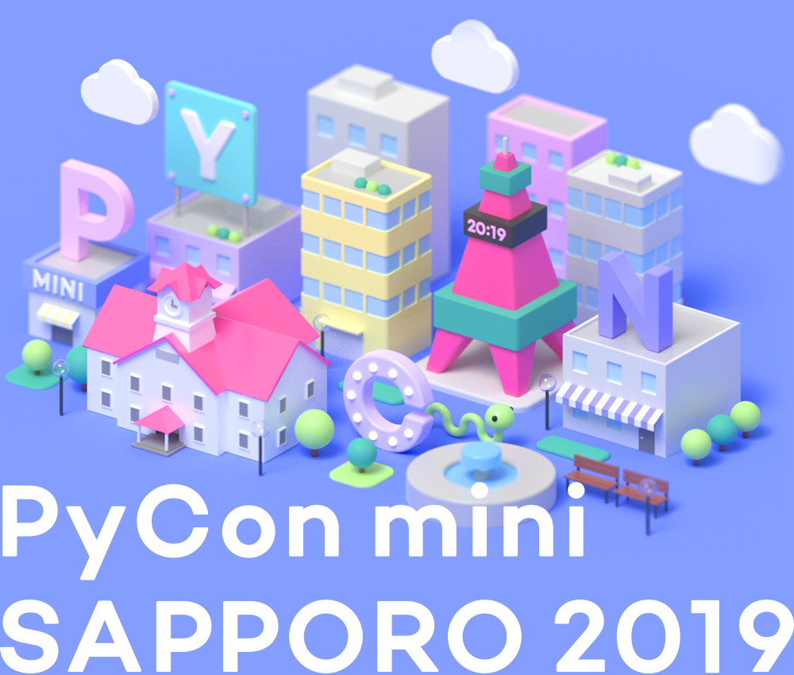
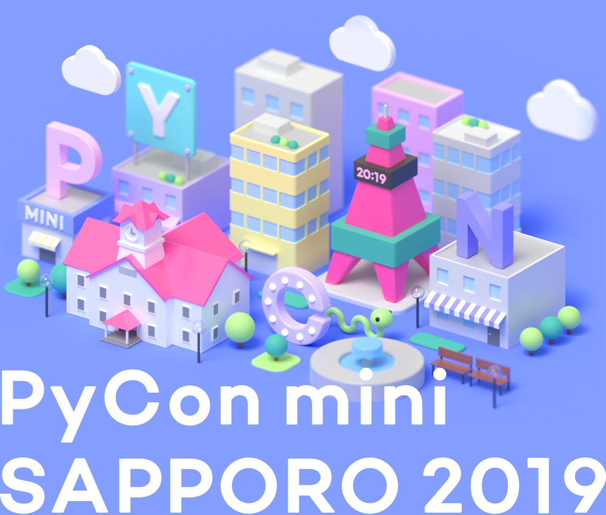

| 10:30 |
受付開始 |
11:00
-
11:10 |
セミナールーム A オープニング |
|
11:10
-
12:00 |
セミナールーム A
ゲストスピーカー
Pythonとはなんなのか？
機械学習，Web開発，ネットワーク機器の制御や教育まで幅広く活用され，今や世界で一番人気のあるプログラミング言語とも言われるようになったPythonの正体について，縦横に解説します。
|
|
12:00
-
12:05 |
休憩 |
12:05
-
12:35 |
セミナールーム A
実験から量産までMicroPythonで動く! IoTセンサー Degu(デグー) を作った話
組込み向けPython である MicroPython でカスタマイズ可能なIoTセンサーデバイスをオープンソースで公開するDegu Project( https://open-degu.com/)を発足しました。 Degu Project が目指す、センシングからクラウド上のデータ更新まで対応するコンセプトと、開発の裏側を紹介します。 |
セミナールーム B
地方コミュニティから分析のお仕事をはじめた話とTesseract-OCR ver.4による文字認識・学習手法
オフラインOCRで有名なtesseract-ocrのver.4が昨年リリースされました。DeepLearning(LSTM)を取り込み学習手法や改善の手法もver.3とは大きく変わりましたが、互換性を保ちつつ学習する手法や多様なパラメータの種類と、解析の自動化のために構築したWEBサーバ等について解説します。
|
12:35
-
13:35 |
ランチ休憩 |
13:35
-
14:05 |
セミナールーム A
Simple-Spotify: Pythonでシンプルに楽曲データを扱うライブラリ
音楽ストリーミングサービスSpotifyは開発者向けAPIを公開しています。このAPIでは楽曲やアーティスト、プレイリストの情報が取得できます。またそれだけでなく、曲の長さ、テンポ、キーなどといった楽曲の構成要素や解析データも取得することができます。アプリやデータ分析など応用できる幅は様々です。Spotify APIの使い方は簡単ですが、認証フローが複数あることがハマりどころです。
この発表では、Spotify APIを認証フローも含めてシンプルに使うために開発しているラッパーライブラリSimple-Spotifyを解説します。またいくつかのユースケースも紹介します。
|
セミナールーム B
Pythonで挑戦！U-16プログラミングコンテストの紹介
旭川発で全国へ広がりを見せている「U-16プログラミングコンテスト」。昨年、札幌市で初開催となった第1回札幌大会の競技部門では、子ども達が挑戦するプログラミング言語としてPythonを採用しました。
なぜPythonなのか？子ども達はどのようにしてPythonを学ぶのか？実際のコーディング例とデモを交えながら、U-16プログラミングコンテストの取り組みについて紹介します。
|
14:05
-
14:10 |
休憩 |
14:10
-
14:40 |
セミナールーム A
Jupyter Notebookではじめるインタラクティブな開発環境入門
Jupyter Notebookはブラウザから利用可能なPythonの実行環境です。プログラムをインタラクティブに実行してその動作を確認できるとともに、一連の流れをファイルとして保存することで再現可能な実験的プログラムを効率よく作成可能です。また、Githubなどを使うことで記述されたプログラムやその処理結果、処理内容に関するメモを共有することが可能になります。本発表を通して、Jupyter Notebookを使った開発の利便性を実感してください。
|
セミナールーム B
ZappaでDBもパッケージしたサーバーレスAPIを構築してみた
Zappaとは、AWSのLambdaやAPI Gateway等のサービスを利用し、Webアプリケーションを手軽に構築できるPythonのサーバーレスフレームワークです。Zappaを利用することで、AWSの各サービスの詳細設定不要でサーバーレスアプリケーションをデプロイすることが可能です。
今回は、DBもパッケージしたサーバーレス住所検索APIを構築する方法を紹介していきたいと思います。
|
14:40
-
14:45 |
休憩 |
14:45
-
14:55 |
セミナールーム A
スポンサーセッション1
株式会社MIERUNE / クラスメソッド株式会社
|
|
14:55
-
15:00 |
休憩 |
15:00
-
15:50 |
セミナールーム A
ゲストスピーカー
“Pythonでセキュリティ”はじめの一歩ーSANS InstituteのPython ー
SANS InstituteのAutomating Information Security with Pythonうけてみた
本セッションでは、AWSの中で、どちらかといえばコンプライアンス寄りの仕事をしている人間（Code初心者！）の目線で、セキュリティの自動化などにおけるPythonのお話をします。その中で世界最大規模のセキュリティカンファレンスであるRSAカンファレンスで受講したPythonによるSecurity Automationのセッション受講談や、クラウドでの利活用の話などにふれたいと思います。
|
|
15:50
-
16:00 |
休憩 |
16:00
-
16:30 |
セミナールーム A
PythonistaのためのコードレビューTips
チーム開発では欠かせないものだけど、意外と難しいコードレビュー。この発表ではPythonistaが明日から使えるコードレビューの実践的なtipsを紹介します。
- Style Guide / Lint /Auto Format / pre-commit hooks
- PRの書き方 / WIPの活用 / Gifアニメーション・キャプチャの添付
- PRのサイズ / Dangerでのチェック
- レビューコメントの書き方 / [nits] [IMO] [must] [ask] prefixの活用
- レビューで長い議論が発生した場合の対処方法
- 絵文字・LGTM画像の活用
|
セミナールーム B
Pythonとラズパイでラジコンカーをを自動操縦に！
ラジコンカーを改造してラズパイ上のPythonで制御できるようにしたAIカー、Donkey Carプロジェクトを紹介します。部材の入手から自動運転までの一連の手順、Pythonによる制御がどうなっているかについて説明します。
|
16:30
-
16:40 |
休憩 |
16:40
-
17:10 |
セミナールーム A
入門pandas - 仕事と趣味で実践的に使うためのお作法
|
セミナールーム B
WSGIアプリケーションで遊んでみよう
PythonにはDjangoやBottleなど多くのウェブフレームワークがあります。広く普及しているウェブフレームワークはWSGIという標準化されたインタフェースに沿って実装されています。
本発表では、WSGIの概要とWSGIの仕様に準拠した簡易なウェブフレームワークの実装について紹介します。
WSGI準拠のウェブフレームワークを何気なくつかっている方にとって、少しだけ内部の仕組みについて知っていただければ幸いです。
|
17:10
-
17:15 |
休憩 |
17:15
-
17:25 |
セミナールーム A
スポンサーセッション2
Deguプロジェクト / さくらインターネット株式会社
|
|
17:25
-
17:30 |
休憩 |
17:30
-
18:00 |
セミナールーム A
LT
|
|
18:00
-
18:10 |
セミナールーム A クロージング |
|
 
